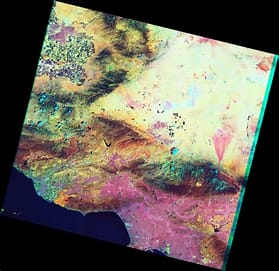

The Landsat program, initiated in 1972, has been capturing detailed Earth imagery for environmental monitoring, land use change analysis, and climate studies. Over time, a series of satellites equipped with progressively more advanced sensors have been launched. Each Landsat mission has contributed significantly to global remote sensing applications.
| Mission | Launch Date | Decommission Date | Sensors | Resolution |
|---|---|---|---|---|
| Landsat 1 | July 23, 1972 | January 6, 1978 | Multispectral Scanner (MSS) | 80 meters |
| Landsat 2 | January 22, 1975 | February 25, 1982 | Multispectral Scanner (MSS) | 80 meters |
| Landsat 3 | March 5, 1978 | September 7, 1983 | Multispectral Scanner (MSS) | 80 meters |
| Landsat 4 | July 16, 1982 | June 15, 2001 | Multispectral Scanner (MSS), Thematic Mapper (TM) | 30 meters (TM), 80 meters (MSS) |
| Landsat 5 | March 1, 1984 | June 5, 2013 | Multispectral Scanner (MSS), Thematic Mapper (TM) | 30 meters (TM), 80 meters (MSS) |
| Landsat 6 | October 5, 1993 | Failed to reach orbit | Enhanced Thematic Mapper (ETM) | N/A |
| Landsat 7 | April 15, 1999 | Still Operational | Enhanced Thematic Mapper Plus (ETM+) | 30 meters (ETM+), 15 meters (Panchromatic) |
| Landsat 8 | February 11, 2013 | Still Operational | Operational Land Imager (OLI), Thermal Infrared Sensor (TIRS) | 30 meters (OLI), 100 meters (TIRS) |
| Landsat 9 | September 27, 2021 | Still Operational | Operational Land Imager (OLI-2), Thermal Infrared Sensor (TIRS-2) | 30 meters (OLI-2), 100 meters (TIRS-2) |